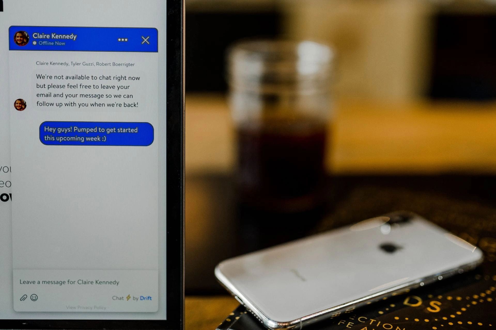

Customer Experience Chatbot
TWe live in an era of instant gratification. People have lower attention spans. They want information instantly available to them. That is what voice-assisted virtual assistants and chatbots are doing. From booking a flight ticket to ordering a pizza or scheduling a meeting, chatbots can do anything. One study shows that 45.8% of consumers would prefer to communicate with the business using the messaging app than email. This approach has led to the adoption of ChatBots, that use machine learning & language learning abilities.
We live in an era of instant gratification. People have lower attention spans. They want information instantly available to them. That is what voice-assisted virtual assistants and chatbots are doing. From booking a flight ticket to ordering a pizza or scheduling a meeting, chatbots can do anything. One study shows that 45.8% of consumers would prefer to communicate with the business using the messaging app than email.Your customers expect a personalised, conversational interaction available 24/7. According to Zendesk’s 2025 CX Trends Report, 70% of consumers now expect a seamless conversation across all channels, with a significant shift toward messaging. In fact, over 75% of APAC customer experience leaders predict that 80% of customer interactions will soon be resolved via automated, messaging-based AI without human intervention. This shift has moved us beyond basic chatbots into the age of AI Agents. From coordinating complex travel itineraries to providing real-time technical support, modern AI can now handle nuanced requests with human-like reasoning. This approach has led to the adoption of ChatBots, that use machine learning & language learning abilities. Recent data shows that over 50% of consumers now prefer messaging-based interactions over traditional email, driving the massive adoption of Large Language Models (LLMs).Unlike the rigid bots of the past, today’s assistants use advanced Natural Language Processing (NLP) to understand context, tone, and intent, making the "I don't understand that question" error a thing of the past.
Beyond Basic Support: The Virtual Brand Mascot
An AI assistant is no longer just a cost-saving tool; it is a primary touchpoint for customer service. It integrates seamlessly across platforms like WhatsApp, Instagram, Slack, and custom-built content management systems like Project Harakeke. These assistants act as digital mascots—sophisticated characters that entertain and engage, much like a highly specialized version of Alexa or Siri. They don’t just answer questions; they use data to provide proactive recommendations and personalized up-selling that feels like a concierge service rather than a sales pitch.
We can leverage the chatbot technology to enhance the customer experience in the new socially distanced dine-in experience. Covid-19 has changed the way that orders are taken in a restaurant. To maintain social distance, many restaurants are using QR code for taking orders. We can leverage the use of chatbots for customers to look up the menu, place an order, ask questions, pay their bill etc., when they come to dine-in. Chatbots can be integrated with the restaurant’s website and mobile app.
Chatbots can also be used to provide information about the restaurant, its menu, and its location.
They can also be used to provide information about the restaurant’s hours of operation,
and to answer questions about the restaurant’s policies and procedures.
The modern dine-in experience leverages AI to bridge the gap between digital and physical service.
Instead of a static PDF menu, customers now interact with intelligent interfaces to:
- Inquire about allergens or specific ingredients in real-time.
- Receive wine or side-dish pairings based on their current selection.
- Split bills and process payments via digital wallets without waiting for a server.
- Provide instant feedback that the kitchen can act on before the guest even leaves the table.
The AI space is rapidly moving toward Multimodal interaction. It’s no longer just about typing; it’s about voice, vision, and touch. With deep integration into home ecosystems like Google Home and Apple Intelligence, the barrier between a customer’s home and a business's service has vanished.
AI is not just a tool for customer service; it’s an intelligent assistant for customer experience, it is a baseline requirement for any business aiming to provide a memorable, modern customer experience
By using AI to provide a seamless and engaging experience, businesses can create a loyal customer base and create a memorable experience.